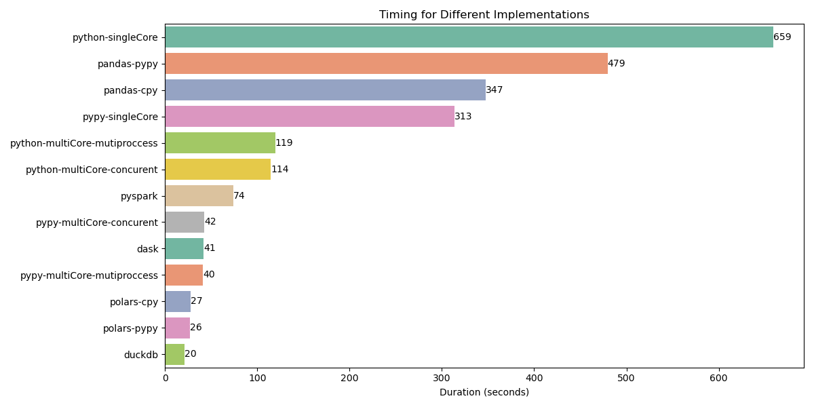

Goal
This project implements the One Billion Row Challenge using Python, focusing on optimizing performance with various libraries and techniques. The goal is to aggregate temperature data from one billion rows and compute minimum, mean, and maximum temperature values per weather station.
Overview
The task is to read a text file containing temperature measurements for different weather stations and compute the statistics (min/mean/max) for each station. The output is presented in a sorted format, as shown in the project description.
Project Structure
- solutions/: Contains different implementations of the challenge using various libraries and techniques.
- timeAndCompare.py: Runs different implementations and compares the average performance of each run.
Performance Results
The following chart demonstrates the performance comparison of different implementations. All tests were conducted on a Windows 10 system with an AMD Ryzen 9 4900HS @ 3.00 GHz and 16.0 GB RAM.
Analysis of Results
Single-threaded Performance: The single-core Python implementation took over 659 seconds, highlighting the limitations of sequential processing. Using PyPy, the runtime was cut to 313 seconds due to JIT compilation.
Optimized Libraries: Pandas-based implementations showed performance improvements, but they still left significant room for optimization, with runtimes of 479 seconds (PyPy) and 347 seconds (CPython).
Concurrent Processing: Utilizing multiprocessing reduced execution time significantly. The multiprocessing implementation in Python took 119 seconds, while a concurrent implementation achieved 114 seconds.
Big Data Frameworks: Frameworks like Dask and PySpark demonstrated powerful performance optimizations, with Dask completing in just 41.5 seconds and PySpark in 74 seconds.
High-performance Libraries: Polars and DuckDB provided the best performance, with Polars (PyPy) taking 26.8 seconds and DuckDB completing in an impressive 20.7 seconds.
Conclusion
This challenge emphasizes the importance of selecting the right tools when working with massive datasets. By utilizing parallel processing and optimized libraries, the performance improved dramatically, making it feasible to process billions of rows efficiently.